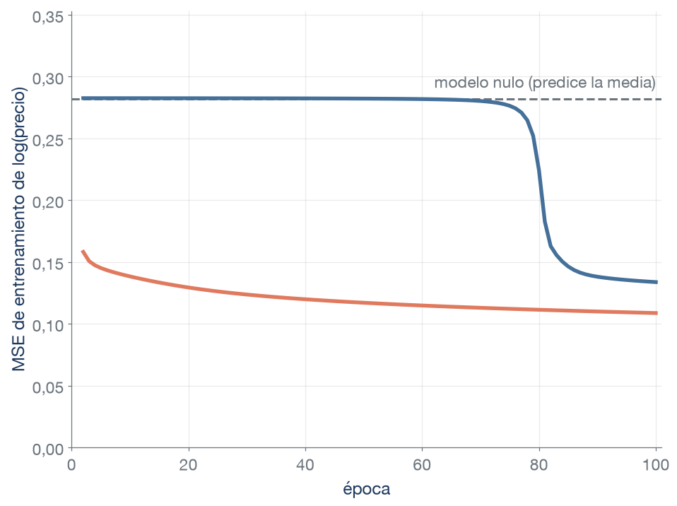
Técnicas Avanzadas de Predicción en Negocios

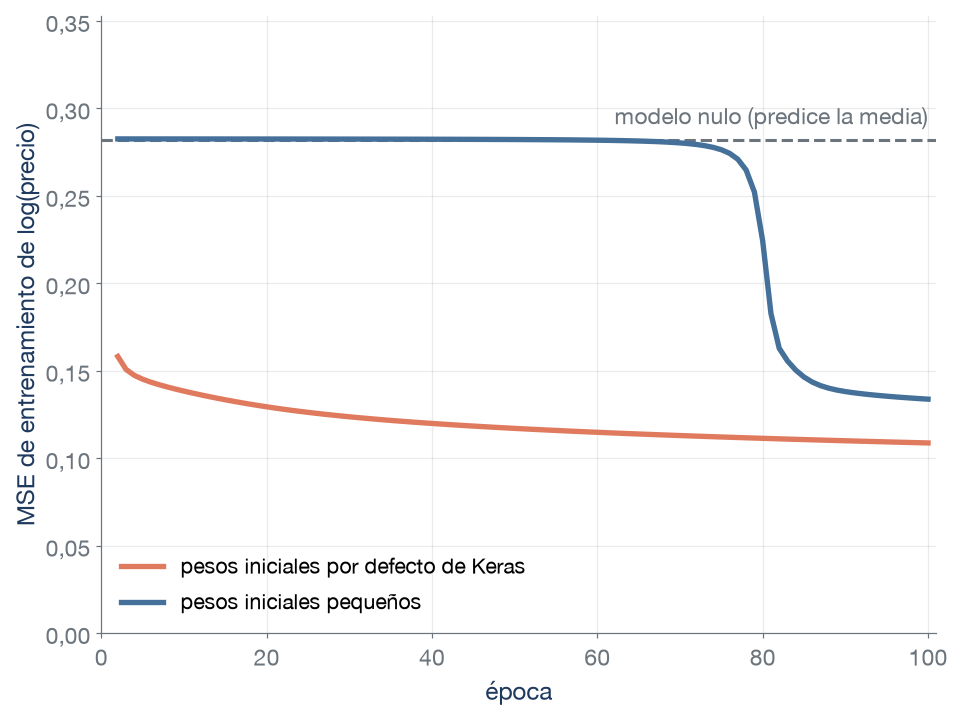
Anuncios de Valencia, una división del entrenamiento (80 % para ajustar), desde la época 2. MSE de log(precio): la pérdida que minimiza la red.
Una red se entrena con descenso del gradiente. La retropropagación calcula el gradiente de la pérdida respecto de todos los pesos con una pasada hacia delante y otra hacia atrás, y la regularización limita cuánto se ajusta la red al conjunto de entrenamiento.
Notación
\[\theta^{(t+1)} = \theta^{(t)} - \eta\, \nabla L\big(\theta^{(t)}\big)\] \(\theta\) son todos los pesos de la red en el paso \(t\), \(\eta\) es la tasa de aprendizaje y \(\nabla L\), el gradiente: la derivada de la pérdida \(L\) respecto de cada peso.
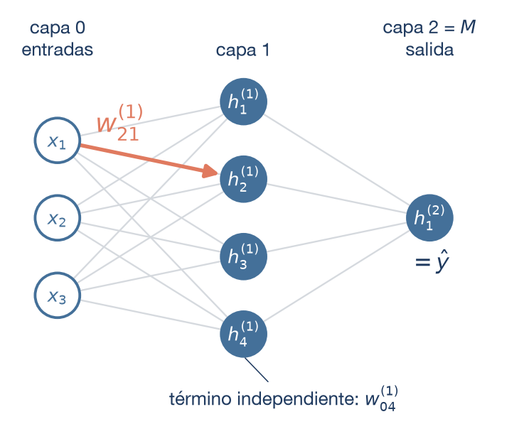
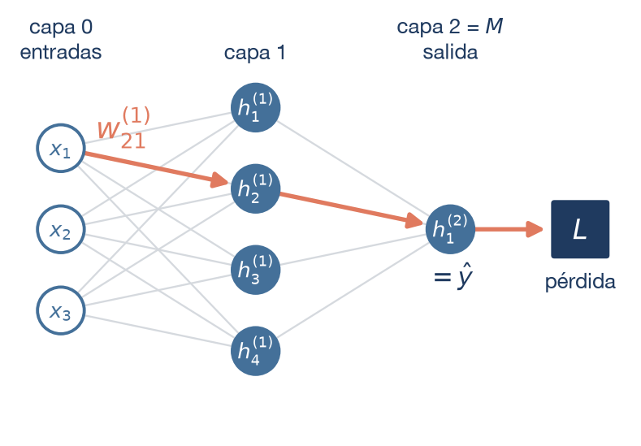
¿Por cuántos caminos llega a la pérdida un cambio en \(w^{(1)}_{21}\)? ¿Y un cambio en \(x_1\)?
Definición
El error de la neurona \(j\) de la capa \(l\) es \(\delta^{(l)}_j = \dfrac{\partial L}{\partial z^{(l)}_j}\): cuánto cambia la pérdida si cambia la \(z\) de esa neurona. Es lo que la neurona aporta a la pérdida.
| Ecuación | Qué calcula | |
|---|---|---|
| BP1 | \(\delta^{(M)} = \dfrac{\partial L}{\partial h^{(M)}} \odot g'\big(z^{(M)}\big)\) | Error de la capa de salida |
| BP2 | \(\delta^{(l)} = \big((w^{(l+1)})^\top \delta^{(l+1)}\big) \odot g'\big(z^{(l)}\big)\) | Error de la capa \(l\) a partir del de la \(l+1\) |
| BP3 | \(\dfrac{\partial L}{\partial w^{(l)}_{0j}} = \delta^{(l)}_j\) | Gradiente del término independiente |
| BP4 | \(\dfrac{\partial L}{\partial w^{(l)}_{jk}} = h^{(l-1)}_k\, \delta^{(l)}_j\) | Gradiente de cada peso |
Cada ecuación sale de la regla de la cadena. En la salida (BP1), con la pérdida \(L = \big(y - h^{(M)}\big)^2\): \[\delta^{(M)} = \frac{\partial L}{\partial h^{(M)}}\, \frac{\partial h^{(M)}}{\partial z^{(M)}} = -2\,\big(y - h^{(M)}\big)\, g'\big(z^{(M)}\big)\] El símbolo \(\odot\) es el producto elemento a elemento.
Una neurona ReLU tiene \(z < 0\) para una observación. ¿Qué gradiente reciben sus pesos de entrada por esa observación?
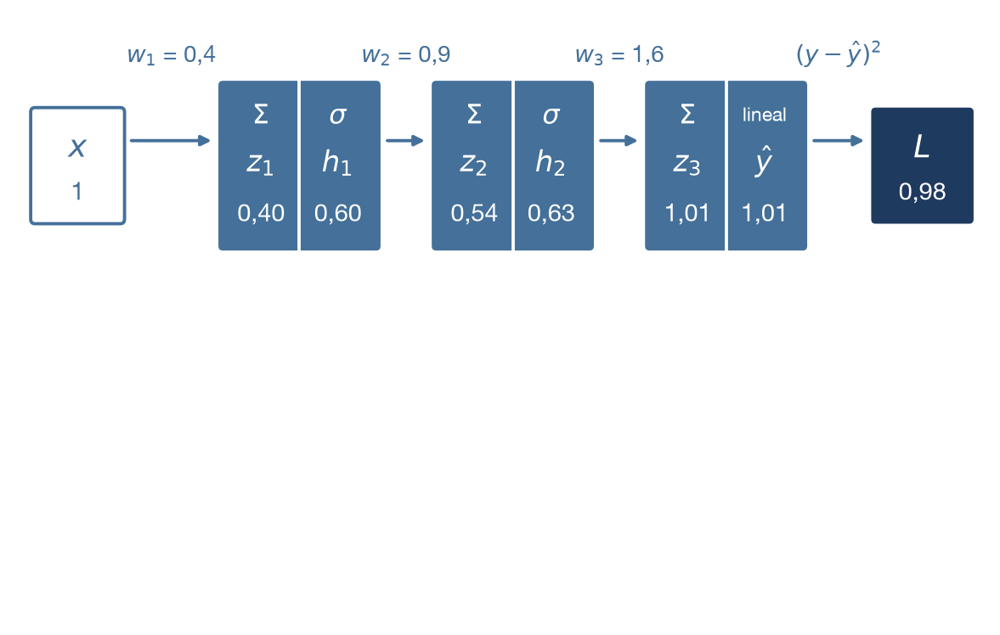
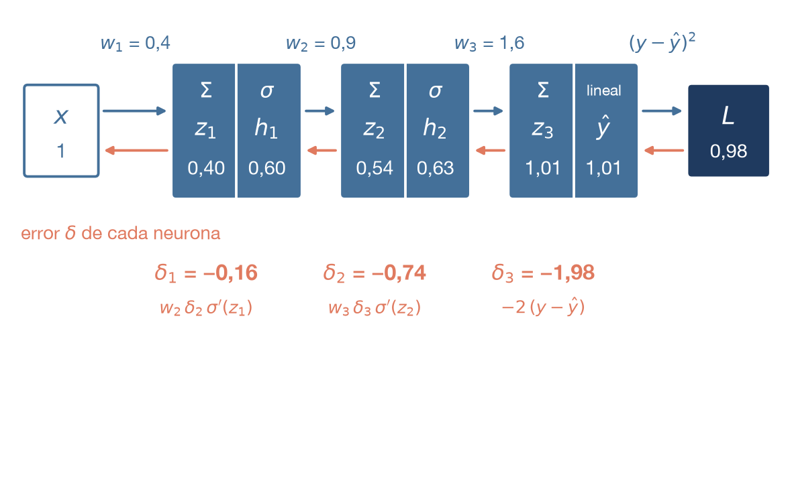
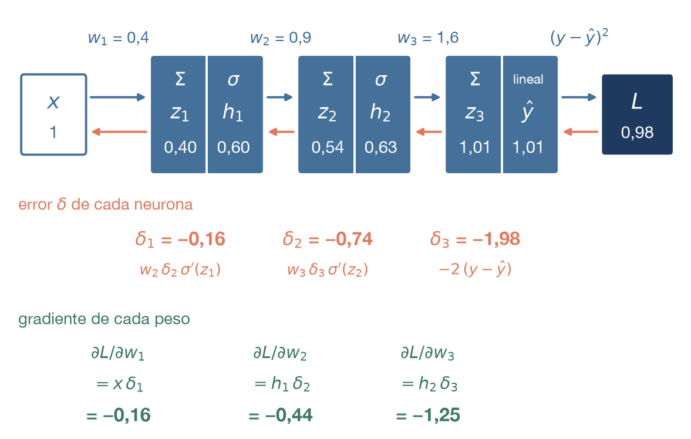
Con \(\eta\) = 0,1, ¿cuál es el nuevo valor de \(w_1\)?
La superficie de la pérdida es el valor de la pérdida para cada combinación de pesos. La de la regresión lineal es convexa, un cuenco a veces alargado con un solo valor mínimo. Al entrenar una red aparecen cuatro problemas:
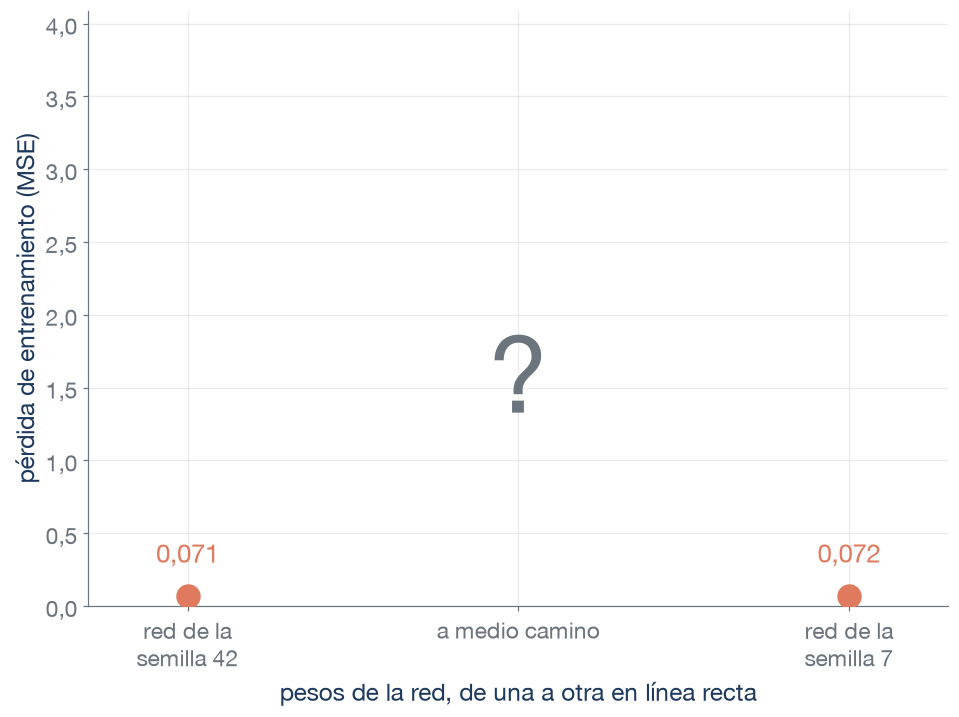
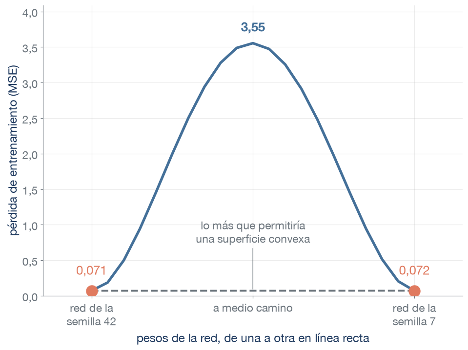
Una división del entrenamiento. Pérdida: MSE de log(precio) con las observaciones del ajuste. A medio camino: la red con la media de los pesos de las dos.
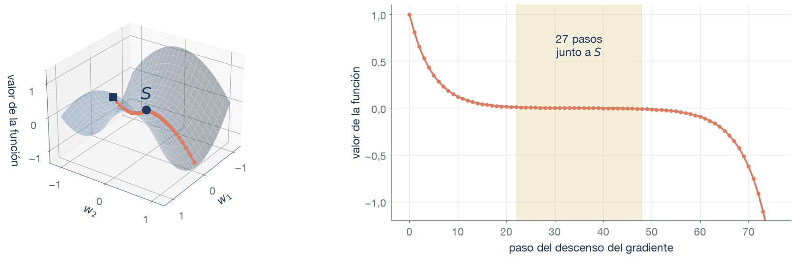
Función de ejemplo con dos pesos, \(f(w_1, w_2) = w_1^2 - w_2^2\). Descenso del gradiente desde (1; 0,001) con \(\eta\) = 0,05.
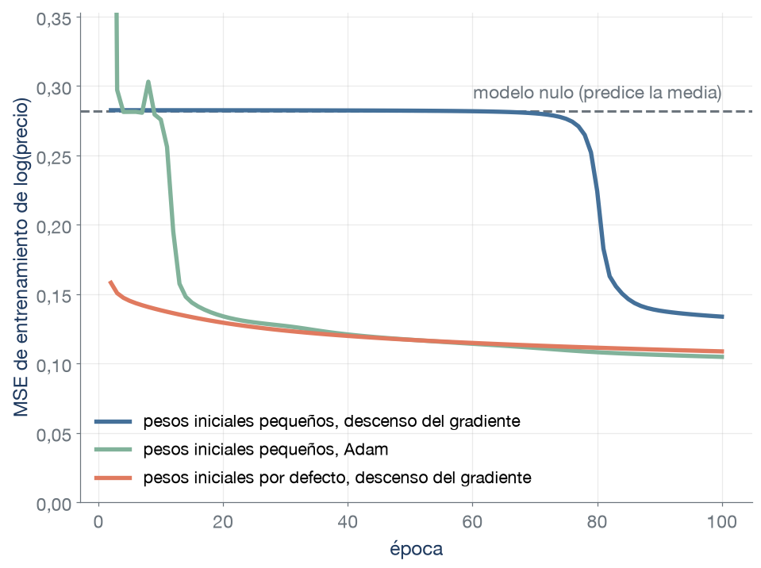
Una división del entrenamiento, desde la época 2. Pesos iniciales pequeños: normales de desviación típica 0,05, elegidos pequeños a propósito. Por defecto, Keras usa una escala que depende del número de neuronas de cada capa. Descenso del gradiente con \(\eta\) = 0,01 y Adam con \(\eta\) = 0,001. Gradientes medidos con 512 anuncios del ajuste antes de entrenar.
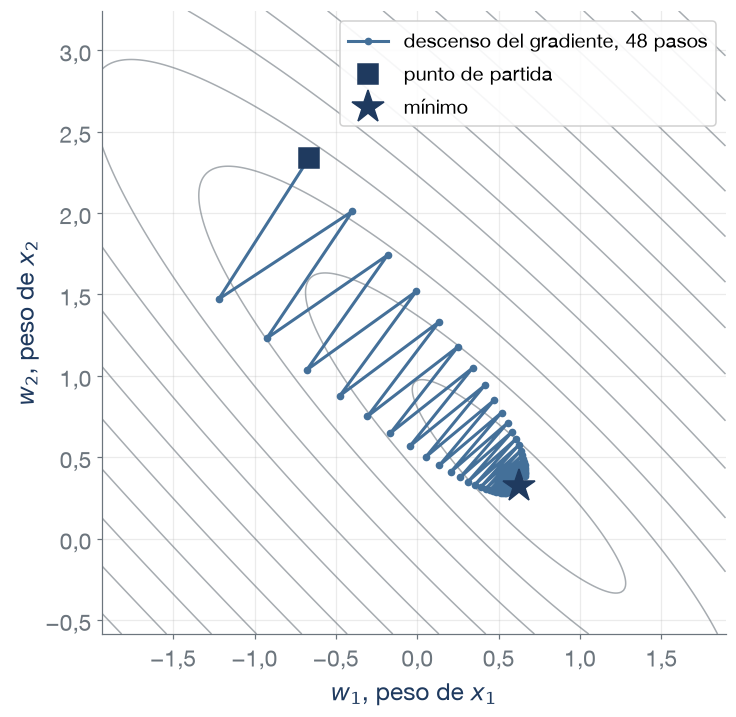
En el valle, el gradiente cambia de signo en cada paso de un lado a otro y apunta siempre igual hacia el fondo. Si cada paso sumara los gradientes recientes, ¿qué pasaría en cada dirección?
Pérdida de una neurona lineal con dos predictores correlacionados (0,9) y estandarizados, 200 observaciones simuladas: el valle aparece ya sin capas ocultas. Descenso del gradiente con \(\eta\) = 0,51.
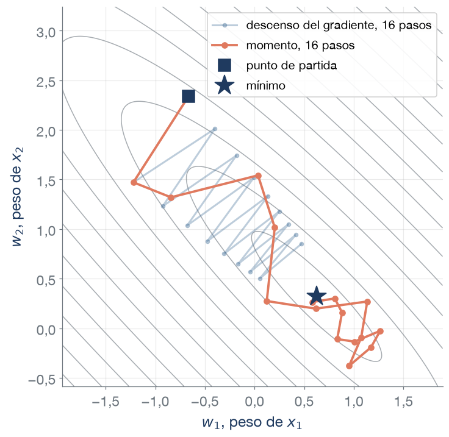
\(g_t\): gradiente del minilote en el paso \(t\). \(v_t\): la velocidad. \(\beta\): el peso del paso anterior (momentum en Keras), aquí 0,8. «Llega»: baja a 0,01 por encima de la pérdida mínima.
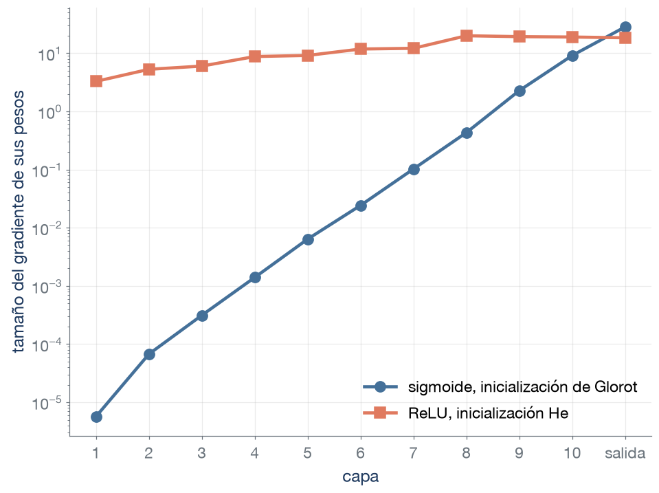
Norma del gradiente de la pérdida respecto de los pesos de cada capa, antes de entrenar, con 512 anuncios. Escala logarítmica.
| Problema | Señal que conviene comprobar | Corrección | En Keras |
|---|---|---|---|
| 1. La pérdida no es convexa | Dos ajustes con errores parecidos y predicciones distintas | Varias semillas y promediar las predicciones | keras.utils.set_random_seed |
| 2. Meseta cerca de un punto de silla | La pérdida de entrenamiento cambia muy poco durante muchas épocas. Revisar los gradientes y la escala de los pesos iniciales | Pesos iniciales al azar y escalados, o Adam | kernel_initializer, Adam() |
| 3. Valle estrecho | La pérdida baja despacio y oscila. Revisar la correlación de los predictores y la tasa | Momento | SGD(momentum=0.9) |
| 4a. Gradiente que se desvanece | El gradiente de las primeras capas es mucho menor que el de las últimas. Revisar su norma capa a capa | ReLU, inicialización He, normalización por lotes | activation="relu", "he_normal", BatchNormalization() |
| 4b. Gradiente que explota | La pérdida salta o da nan |
Recorte del gradiente, \(\eta\) menor | clipnorm del optimizador |
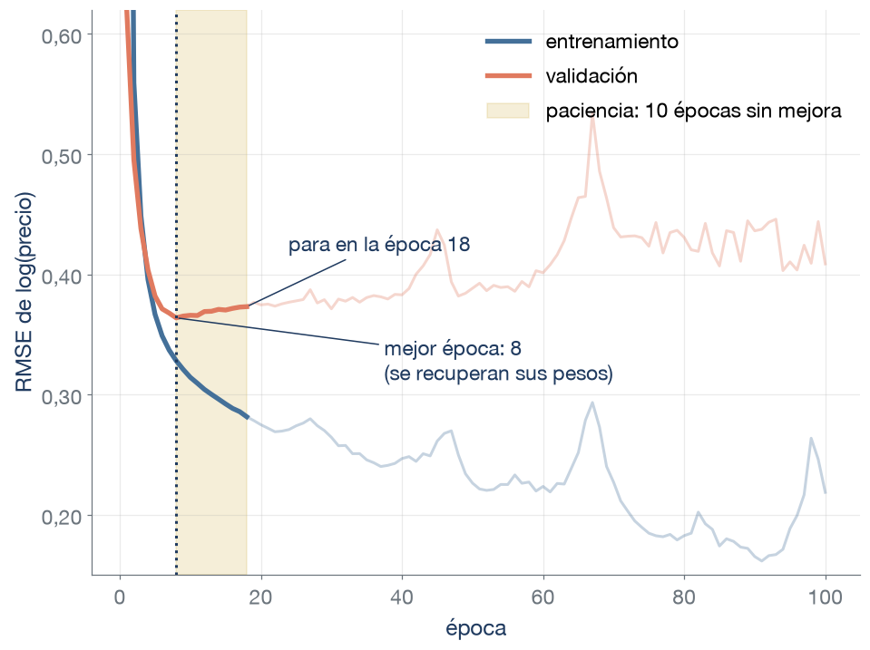
Red de dos capas de 200 neuronas sin regularizar, con una división del entrenamiento: 80 % para ajustar y 20 % para validar.
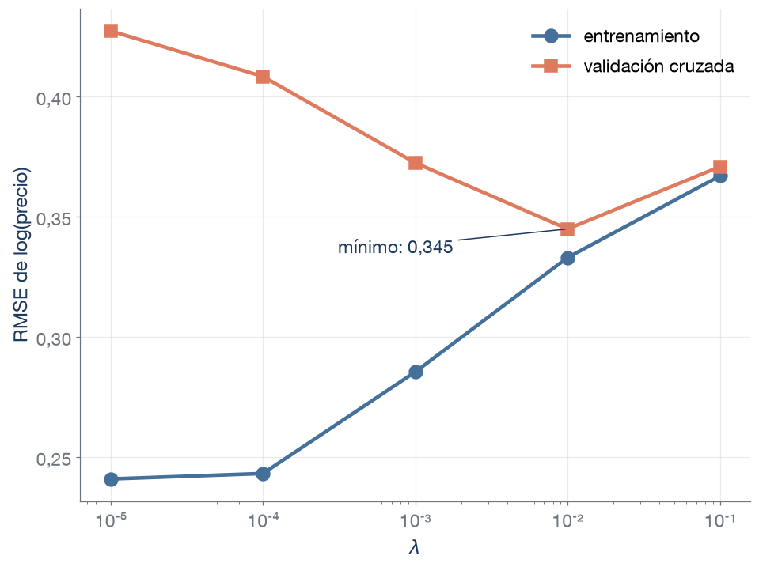
Red de dos capas de 200 neuronas, 100 épocas, con la penalización en los pesos de cada capa oculta. Validación cruzada, media de 5 particiones del entrenamiento.
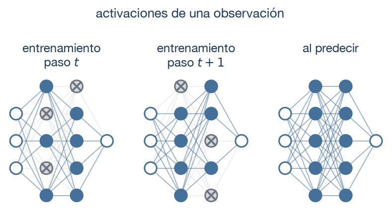
En cada paso, cada neurona falta con probabilidad 0,3. Si una sola neurona recogiera casi todo el efecto de un predictor, ¿qué pasaría en los pasos en que falta? ¿Qué le conviene a la red?
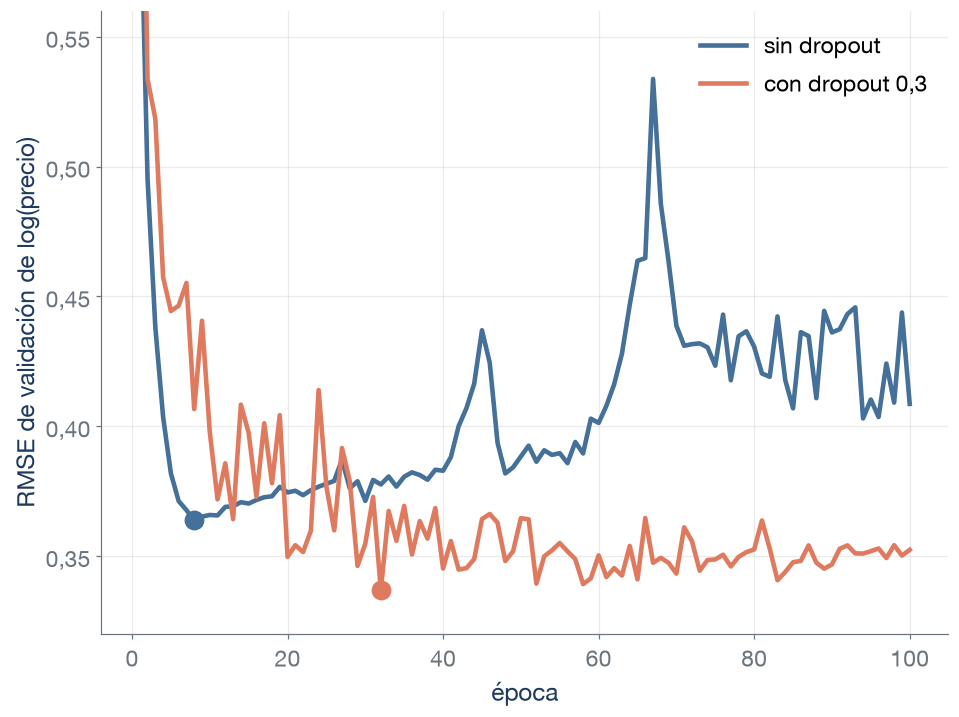
Red de dos capas de 200 neuronas, con una división del entrenamiento: 80 % para ajustar y 20 % para validar. Los puntos marcan el mínimo de cada curva.
| Modelo | Exactitud | AUC-ROC | Log-loss |
|---|---|---|---|
| Regresión logística | 0,774 | 0,805 | 0,490 |
| Red (200,) sin regularizar, 100 épocas | 0,805 | 0,850 | 0,593 |
| Red (200,) con parada temprana | 0,815 | 0,859 | 0,423 |
En Keras, como argumentos de fit y compile o como capas:
| Hiperparámetro | Dónde se fija | Qué controla |
|---|---|---|
| Parada temprana | keras.callbacks.EarlyStopping (monitor, patience, restore_best_weights) en callbacks de fit |
Cuándo para el ajuste |
| Validación | validation_split de fit |
Fracción de cada ajuste apartada para decidir la parada, aparte de las particiones de la validación cruzada |
| Penalización L2 | kernel_regularizer=keras.regularizers.L2(λ) en cada Dense |
Tamaño de los pesos |
| Dropout | Capa Dropout(rate) tras cada Dense |
Fracción de neuronas apagadas |
| Normalización por lotes | Capa BatchNormalization() |
Escala de la \(z\) de cada neurona |
| Pesos iniciales | kernel_initializer de cada Dense |
Inicialización |
| Optimizador | optimizer de compile: SGD (con momentum) o Adam, con learning_rate |
Tamaño y dirección de cada paso |
Valores por defecto: patience=0, restore_best_weights=False, validation_split=0.0, L2 con \(\lambda\) = 0,01, kernel_initializer=“glorot_uniform”, SGD con learning_rate=0.01 y momentum=0.0.
Se necesita un modelo que proponga precios anunciados para alojamientos comparables. En parejas (3 min): ¿se propondría una red regularizada? Dar un argumento con la tabla y otro sobre lo que cuesta ajustarla.
| Modelo | RMSE | MAE | R² | Segundos por ajuste |
|---|---|---|---|---|
| Modelo nulo (media) | 0,533 | 0,419 | 0,000 | 0,0 |
| Regresión lineal | 0,368 | 0,276 | 0,522 | 0,0 |
| Red (200, 200) sin regularizar, 100 épocas | 0,433 | 0,321 | 0,337 | 8,6 |
| Red (200, 200) con parada temprana | 0,371 | 0,278 | 0,513 | 3,1 |
| Red (200, 200) con penalización \(\lambda\) = 0,01 | 0,345 | 0,258 | 0,580 | 9,1 |
| Red (200, 200) con dropout 0,3 | 0,346 | 0,255 | 0,577 | 9,5 |
| SVR con núcleo RBF (\(C\) = 1, \(\gamma\) = 0,1) | 0,334 | 0,246 | 0,605 | 0,4 |
| Random forest (500 árboles) | 0,314 | 0,233 | 0,652 | 3,1 |
| XGBoost (2000 árboles) | 0,314 | 0,233 | 0,652 | 0,9 |
Validación cruzada de log(precio), media de 5 particiones del entrenamiento. Se compara por RMSE, con MAE y \(R^2\) como referencia. La red con parada temprana reserva en cada ajuste una quinta parte para elegir la época. Segundos por ajuste con un núcleo de CPU.
| Concepto | Significado | Keras |
|---|---|---|
| Retropropagación | Cálculo del gradiente de la pérdida respecto de todos los pesos con la regla de la cadena, con una pasada hacia delante y otra hacia atrás | Automática en fit |
| Notación \(w^{(l)}_{jk}\) | Peso de la neurona \(k\) de la capa \(l-1\) a la neurona \(j\) de la capa \(l\). En la sesión del perceptrón se escribió \(w_{jk}\) del predictor \(j\) a la neurona \(k\), y \(\beta_k\) en la salida, que aquí son los \(w^{(M)}\) | — |
| Error \(\delta\) de una neurona | Derivada de la pérdida respecto de la combinación lineal \(z\) de la neurona | — |
| Superficie de la pérdida | Valor de la pérdida para cada combinación de pesos | — |
| Mínimo local | Punto en el que la pérdida no baja en ningún punto cercano. Es malo si su pérdida es mayor que la del mejor punto | — |
| Punto de silla | Punto con gradiente cero en el que la pérdida sube en unas direcciones y baja en otras | — |
| Meseta | Zona en la que el gradiente es casi cero y la pérdida apenas cambia durante muchas épocas | — |
| Valle estrecho | Zona en la que la pérdida sube mucho más deprisa en una dirección que en otra (mal condicionamiento). El descenso zigzaguea | — |
| Momento | Suma a cada paso una fracción \(\beta\) del paso anterior | SGD(momentum=β) |
| Adam | Momento más un paso por peso dividido por el tamaño típico de sus gradientes recientes | Adam() |
| RMSprop | Divide el paso de cada peso por la raíz de una media de sus gradientes al cuadrado, sin momento | RMSprop() |
| Programación de la tasa de aprendizaje | Cambiar \(\eta\) durante el entrenamiento, por ejemplo bajarla cuando la pérdida se estanca | ReduceLROnPlateau, LearningRateScheduler |
| Concepto | Significado | Keras |
|---|---|---|
| Desvanecimiento y explosión del gradiente | El gradiente encoge (o crece) capa a capa al multiplicarse los factores de la cadena | — |
| Recorte del gradiente | Limita el tamaño del gradiente antes de cada paso, contra la explosión | clipnorm del optimizador |
| Inicialización He y Xavier (Glorot) | Pesos iniciales aleatorios con una varianza escalada: Glorot la divide por la media de las entradas y las salidas de la capa, y He usa \(2/n\), con \(n\) las entradas | kernel_initializer="he_normal" (Glorot, por defecto) |
| Normalización por lotes | Estandariza la \(z\) de cada neurona con la media y la desviación típica del minilote y la reescala con dos parámetros estimados | BatchNormalization() |
| Parada temprana | Para el ajuste cuando el error de validación no mejora durante la paciencia. Si se pide, recupera los pesos de la mejor época | EarlyStopping(restore_best_weights=True) |
| Paciencia | Épocas sin mejora que se esperan antes de parar | patience |
| Penalización L2 | Suma \(\lambda \sum w^2\) a la pérdida | keras.regularizers.L2(λ) |
| Penalización L1 | Suma \(\lambda \sum \lvert w \rvert\) a la pérdida y lleva pesos a cero | keras.regularizers.L1(λ) |
| Dropout | Anula al azar la salida de una fracción de las neuronas en cada paso del entrenamiento | Dropout(rate) |
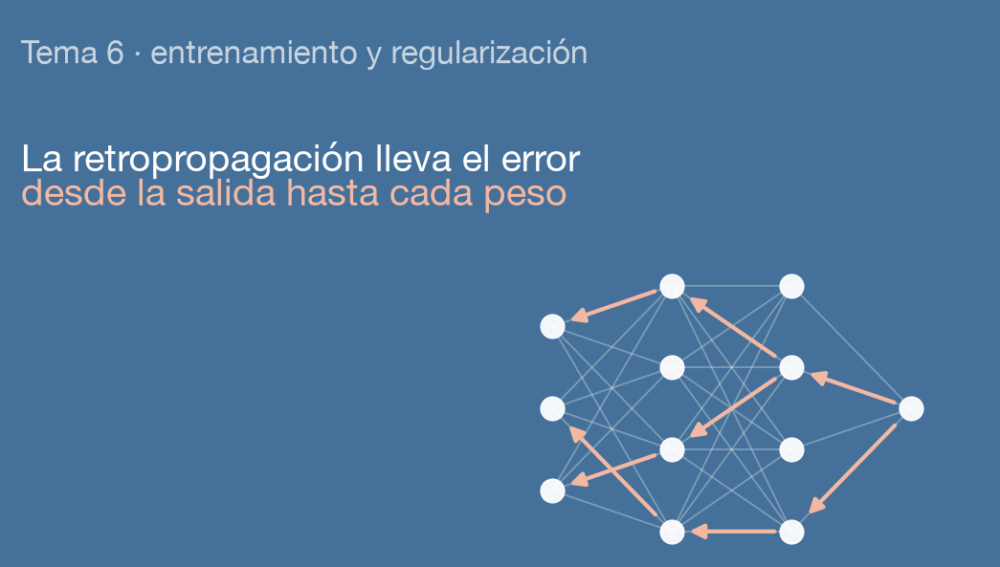